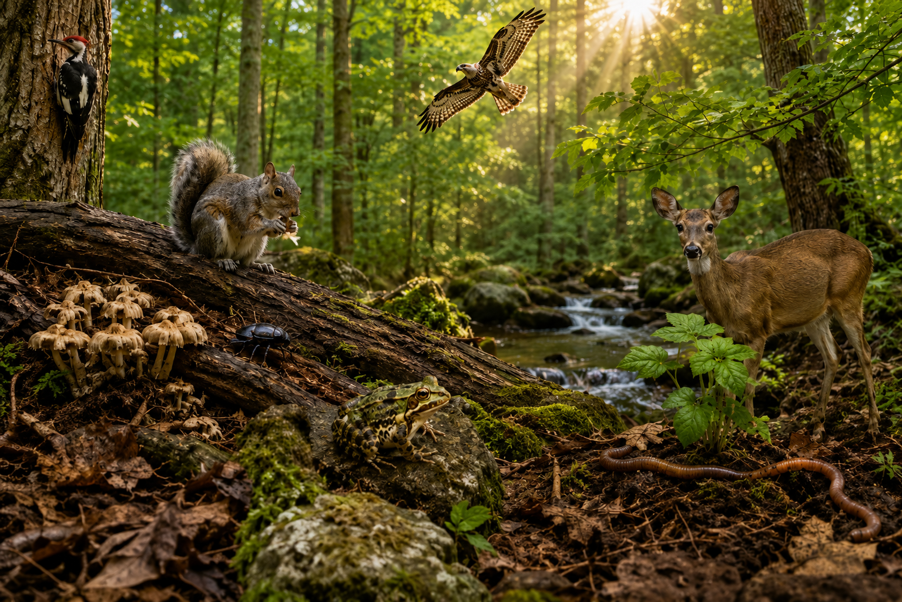
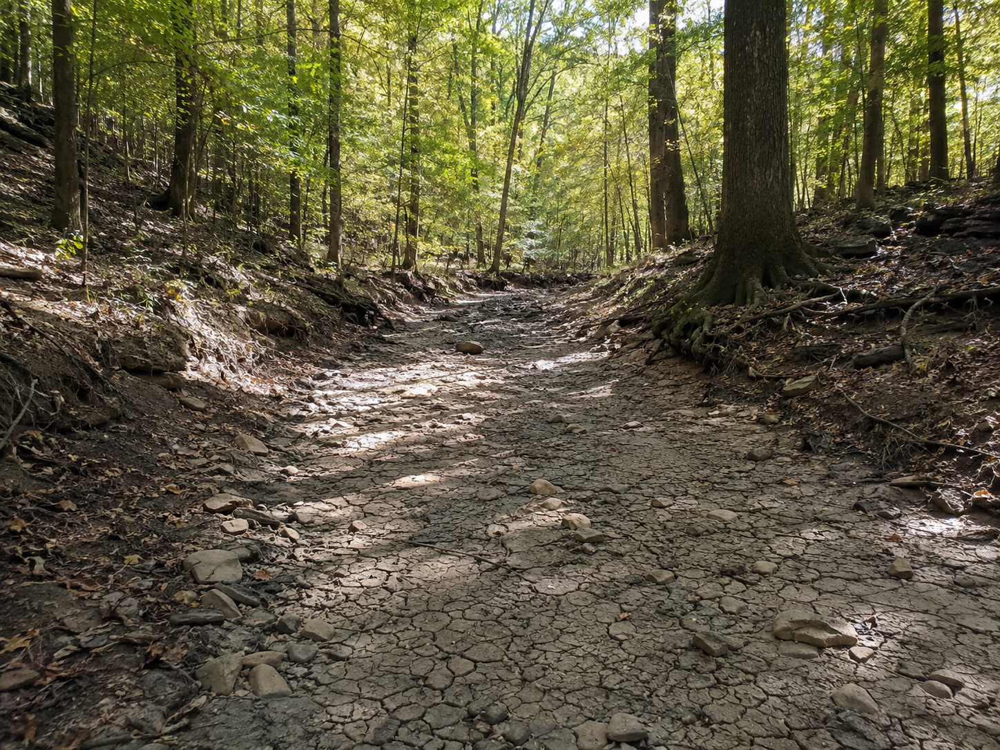
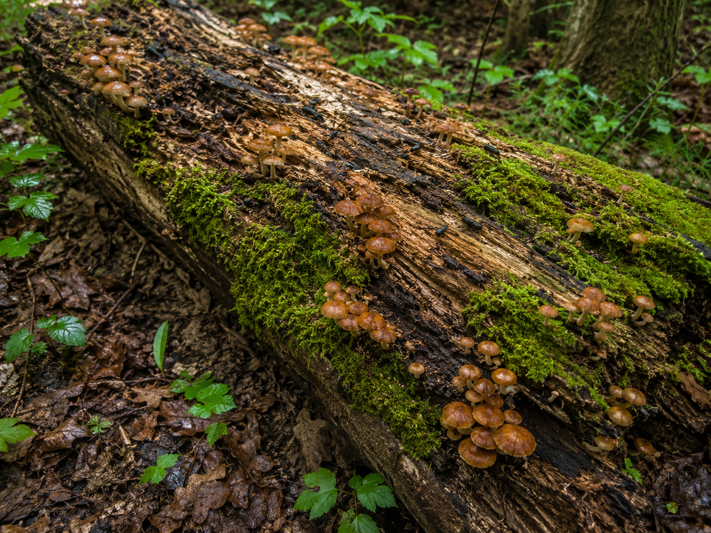

Hold this question in your mind as you work. By the end, you should be able to answer it with evidence.
Start here. Learn the words you will use today.
Imagine you are standing at the edge of a quiet forest. You can see trees, soil, rocks, insects, birds, and sunlight. Some parts are alive. Some are not alive. All of them matter.
Good scientists do not rush to answer. They look first. Then they ask better questions.
These words will help you talk about ecosystems like a scientist. Tap each card to flip it and read the definition.
Copy this sentence carefully into your science notebook:
"In an ecosystem, living and nonliving parts work together."
Now learn the main science idea.

An ecosystemecosystemA place where living and nonliving things interact. is a place where living and nonliving things interact. A forest, pond, desert, ocean, or grassland can be an ecosystem.
Living things include plants, animals, fungi, and tiny organisms. Nonliving things include sunlight, water, air, soil, rocks, and temperature.
Every organismorganismA living thing, such as a plant, animal, or fungus. has needs. Plants need sunlight, water, air, and soil. Animals need food, water, shelter, and space.
These needs connect the parts of an ecosystem. A squirrel may eat seeds from a tree. The tree needs soil and water. One part leads to another.
Ecosystems can change. A storm, drought, fire, pollution, or human activity can change the food, water, or shelter in a habitat.
When an ecosystem changes, some organisms survive. Some move away. Others may struggle if their needs are not met.
Real-World Connection: If a forest stream dries up, insects may have less water. Birds that eat those insects may have less food.

An ecosystem is a system. If one living or nonliving part changes, other parts may change too.

Curious? Go Deeper
Some organisms are easy to see, like deer, birds, and trees. Others are so small that you need a microscope to see them.
Those tiny organisms still matter. Many help break down dead leaves and old wood. That returns materials to the soil, where plants can use them again.
Now test the idea yourself.
You'll need: your notebook, pencil, colored pencils, and one blank page.
You will make a quick model of one ecosystem. A model does not show every detail. It shows the most important parts.
Choose: Pick one ecosystem: forest, wetland, desert, ocean, or grassland.
Sort: List 3 living things and 3 nonliving things found there.
Connect: Draw arrows showing how one organism gets food, water, or shelter.
Change: Add one change, like less rain or fewer plants. Predict what might happen.
Think about how the parts of your ecosystem model work together.
Tell the story of your model from beginning to end — what lives there, what it needs, and what changed.
Think through each question on your own. Talk it through with someone or think about it in your mind.
Check what you understand.
Show what you learned.
🔍 Part A — Label and Sort
Choose one ecosystem. Use these categories: living things, nonliving things, and organism needs.
🚀 Part B — Short Answer
Answer each question in complete sentences. Use your science vocabulary.
Explain why a change to one part of an ecosystem can affect many living things.
What do you think?
💡 Start with: "I think one change can affect many living things because…"
What did you observe or learn that supports your thinking?
💡 Start with: "I know this because the lesson showed…"
Why does that make sense?
💡 Start with: "This makes sense because…"
📚 Try to use at least one of these words: ecosystem, organism, survive
🎨 Part C — Draw & Label
Draw your ecosystem. Label at least 3 living things and 3 nonliving things. Use arrows to show one relationship.
Submit your work on Canvas using one of these options:
Make sure your submission includes all of these: